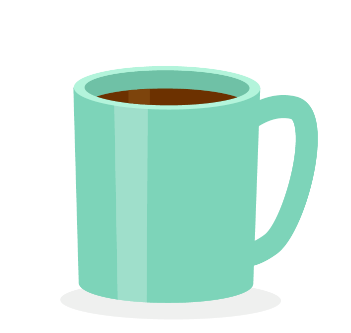
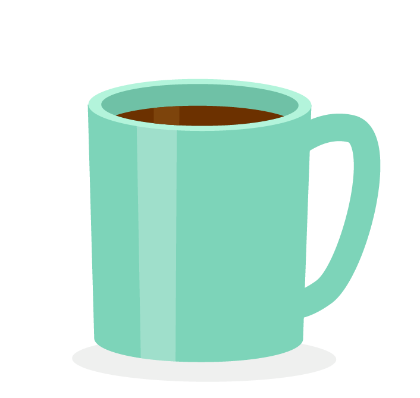

Projets
Créative et proactive de nature, j'ai développé de nombreux projets dans ma vie professionnelle mais aussi personnelle. Dans mes activités passées en tant que consultante des musées, j'ai conçu des expositions, participé et dirigé des projets événementiels et éditoriaux, et mené de nombreux projets d'études de publics ; depuis que j'apprends la programmation, j'ai participé aux projets collectifs de l'école et initié des projets personnels, plus ou moins conséquents, encore en cours ou passés.

Bloody Mary
Janvier 2022 - en cours
Développement d'une app pour le suivi des règles, sans tracking d'informations et en libre accès pour protéger les données des personnes menstruées.

Wonderflower
Mars 2023
Projet collectif en MERN de marketplace de fleurs 🌸, avec du Tailwind en CSS. J'ai travaillé sur l'API et la partie React, puis ai deployé sur Vercel (API et front).
Todo List
Février 2023
Premiers pas avec React avec ce développement d'une Todo List qui permet d'ajouter des tâches, de les supprimer et de les classer ("fait" ou "à faire").
Touiter
Février 2023
Touite sur Touiter, le nouveau réseau social du moment ! Projet collectif en PHP, MySQL avec page de connexion, d'inscription et de posts.

Space discovery
Janvier 2023
Reprise du projet Asté Astro individuellement pour tester un autre design (test du parallax) et la visualisation de données avec Chart.js

Asté-Astro
Novembre 2022
Découvre quel astéroïde était le plus proche de la terre le jour de ta naissance ! Projet collectif autour des api dans le cadre de la formation Ada Tech School.

Devsplore
Octobre 2022
Découvre le périple d'un dev pour arriver à l'école ! Projet collectif dans le cadre de la formation Ada Tech School avec pour objectif de créer un jeu en Lua sur Pico-8.

"Balance ton clip"
Novembre 2020 - mars 2021
Transformation d'ateliers de discussion et de recherches en podcasts mensuels consacrés à l'analyse des représentations dans les clips de musique.

Festival de la muséo
Septembre 2019 - en cours
Développement d'un festival destiné aux professionnels de musées pour échanger sur les dernières recherches dans le domaine.

Enquête - Cité des Enfants
Septembre 2019 - mai 2020
Etat des lieux des ressources pédagogiques en ligne de la Cité des Enfants, préconisations et mise en place sur site.

"Imagine Japan"
Novembre 2014 - juin 2015
Co-direction de l'exposition "Imagine Japan" consacrée au fonds d'archives et d'estampes du Musée d'ethnographie de Neuchâtel (Suisse).